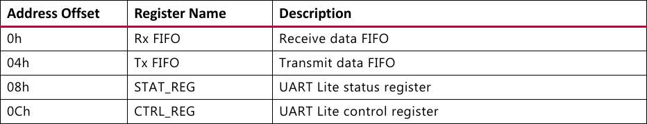
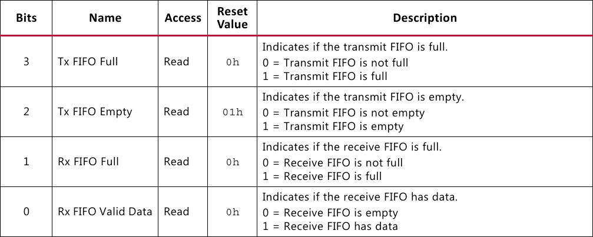
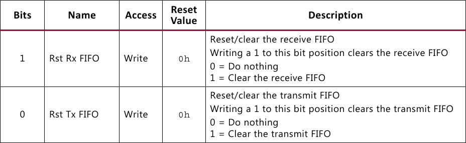
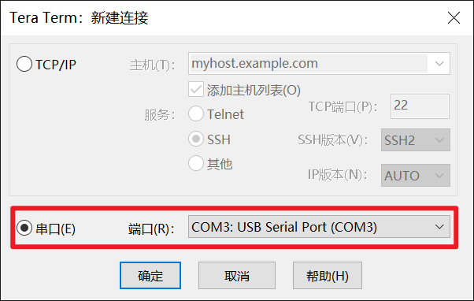
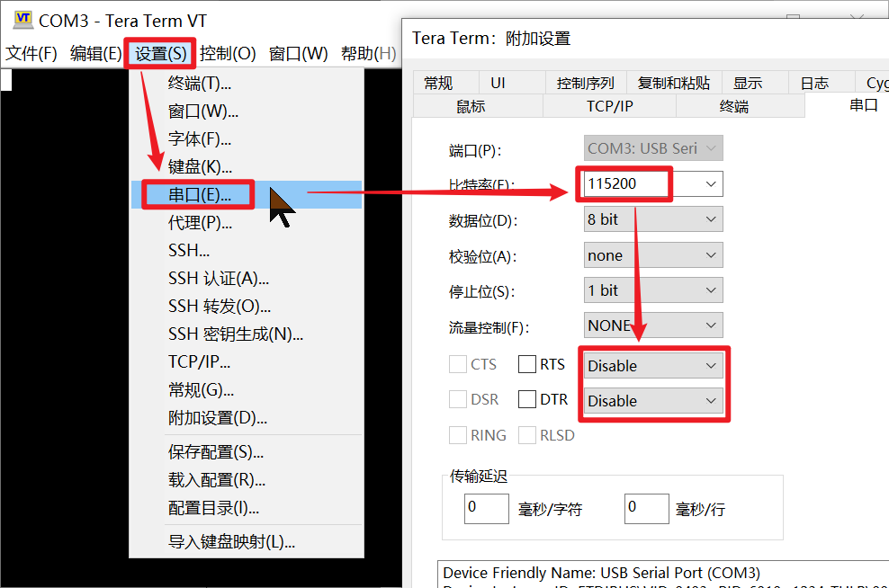
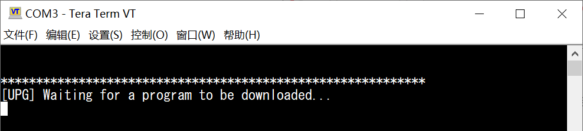
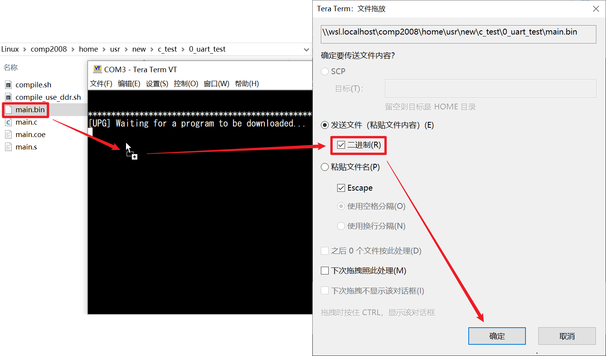

I/O接口编程
1. UART外设的I/O端口功能
根据AXI Uartlite IP核的用户手册，CPU需要通过读写表5-1所示的寄存器来控制UART串口。

其中，Rx FIFO、Tx FIFO分别用于接收字符、发送字符；STAT_REG是状态寄存器，用于判断FIFO的状态、记录中断使能状态等；CTRL_REG是控制寄存器，用于初始化、中断使能等。
由实验原理2.2节的表2-1可知，UART外设的I/O接口基地址是0xFFFF_3000，并且包含4个端口，这4个端口分别与表5-1的4个寄存器一一对应。
根据用户手册，状态寄存器STAT_REG的最低4位可用于获取FIFO的状态，如表5-2所示。

当Tx FIFO非空时，AXI Uartlite IP核会自动从Tx FIFO中取出字符并按照UART数据帧的格式进行发送。CPU需要发送字符时，必须先通过STAT_REG[3]判断Tx FIFO是否已满。若Tx FIFO已满，则CPU必须等待Tx FIFO有空闲空间时，才能把待发送的字符写入到Tx FIFO。
当AXI Uartlite IP核从RX引脚接收到字符之后，字符将被缓存到Rx FIFO。当Rx FIFO非空时，STAT_REG[0]有效，此时CPU读取Rx FIFO，就能获取到输入字符。
根据用户手册，控制寄存器CTRL_REG的最低2位可用于初始化FIFO，如表5-3所示。

在初始化阶段，CPU需要通过CTRL_REG[1:0]清空Rx FIFO和Tx FIFO，以免发送或接收字符时出现无效的字符数据。
2. I/O接口编程
实现miniRV SoC的同学，点击下载c_test_rv_stu.tar.gz。
实现miniLA SoC的同学，点击下载c_test_la_stu.tar.gz。
把下载的C_TEST测试包拷贝到虚拟机的/home/usr目录，然后在虚拟机终端执行下列命令进行解压。
1 | |
C_TEST测试包共包含6个C语言测试程序，如表5-4所示。其中，测试0~2、测试5均包含若干待补全的代码。待补全之处均有“TODO”注释标记。可在打开源码文件之后，使用快捷键 Ctrl+F 搜索“TODO”来定位待补全的位置。
| 序号 | 测试程序名称 | TODO个数 | 说明 |
|---|---|---|---|
| 测试0 | 0_uart_test | 5 | 通过外设读写测试UART是否工作正常 |
| 测试1 | 1_formatIO_test | 5 | 测试scanf、printf函数是否工作正常 |
| 测试2 | 2_sort_test | 5 | 测试递归、malloc是否工作正常 |
| 测试3 | 3_ddr_test | 0 | 测试DDR读写是否正常 |
| 测试4 | 4_coremark | 0 | 测试CPU性能 |
| 测试5 | 5_llama2.c | 5 | 测试LLAMA2推理程序 |
参照实验原理2.3节 I/O接口的读写访问中的I/O接口访问方法，结合以上关于AXI Uartlite的端口说明，完成C_TEST测试包中的测试0~2的相关代码。
在虚拟机终端通过cd命令进入相应的测试目录，然后执行下列命令编译代码。
1 | |
编译成功后，测试目录下将出现main.s、main.coe和main.bin文件，分别是程序的反汇编代码、用于初始化主存的COE文件、用于本实验下板测试的二进制程序。
3. 在FPGA上测试C程序
本实验提供已生成好比特流的SoC，用于对编写好的C程序进行下板测试。请根据指令集和所使用的开发板，在以下4个比特流中下载其中一个，如表5-5所示。
| 指令集 | 开发板 | SoC比特流 |
|---|---|---|
| miniRV | EGO1 | lab2_IOtest_miniRV_ego1.bit |
| miniRV | Minisys | lab2_IOtest_miniRV_minisys.bit |
| miniLA | EGO1 | lab2_IOtest_miniLA_ego1.bit |
| miniLA | Minisys | lab2_IOtest_miniLA_minisys.bit |
打开Vivado，点击“Open Hardware Manager”，如图5-1所示。
连接开发板并下载提供的SoC比特流。
打开Tera Term串口工具，连接串口，如图5-2所示。

Tera Term会自动选择当前连接的串口，但如果电脑连接有多个串口，请先在设备管理器查看FPGA开发板连接的具体串口号，再按图5-2所示进行连接。
从菜单栏打开串口设置，设置波特率为115200，并关闭流控，如图5-3所示。

查看开发板使用须知的图2或图3，找到复位按键。点击开发板的复位按键，随后串口终端将出现等待下载程序的提示信息，如图5-4所示。

把编译生成的.bin文件用鼠标拖动到Tera Term界面。松开鼠标按键后，将出现发送文件的对话框。勾选以二进制格式发送，并点击确定按钮，如图5-5所示。

程序下载完毕后，将自动开始运行。根据运行结果，对所编写的C_TEST程序进行调试。
修改C程序并重新编译后，再次点击开发板的复位按键，即可继续下载并运行程序。
如果下载程序时出现异常，请重新下载比特流并重试。